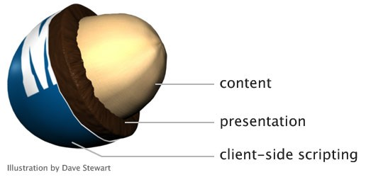

It's not always necessary to ensuring sites render the same across all browsers.
Consider progressively enhancing your site by offering a solid working baseline experience to users with non-modern browsers while providing a richer UI to those users with modern browsers.
Many of these tips are already built into a project template like HTML5 Boilerplate to save you some time.
Those rules work equally well for projects targeted at modern browsers and ones that need older browser support all the way back to IE6.
IE Compat Inspector which can analyze your site in real time, pinpoint patterns of common problems and offer solutions. By including a simple JavaScript file in your code, you'll receive visual results right on your pages.
A good set of build tools such as HTML validators, CSS validators, Uglify, and JSHint, or GruntJS can find latent problems, enforce project code standards, and reduce file size to improve performance.
Start with <!DOCTYPE html>. The modern web has no place for Quirks Mode, which was designed so that mid-1990s web pages would be usable in turn-of-the-century "modern" browsers like IE6 and Firefox 2. Most web pages today end up in Quirks Mode accidentally because of an invalid doctype or extraneous text before the doctype. This can cause strange layout issues that are hard to debug.
Internet Explorer allows you to define which version's engine is used to render a page using the X-UA-Compatible META tag or HTTP header. A specific version can be designated or the latest version using the 'IE=edge' value.
<meta http-equiv="X-UA-Compatible" content="IE=edge">
Designating 'IE=edge' is the best practice because it ensures Internet Explorer uses the latest engine. The most current Internet Explorer version includes the latest security updates as well as feature support. The current version is also the fastest version.
New HTML5 tags like section, header, and footer improve the semantics of markup, but require a special "shiv" script to run in Internet Explorer 6, 7, and 8 or they won't be recognized. Pages that need to work with these legacy browsers even when scripts are disabled cannot use the new HTML5 tags. Using plain div elements and classes is often a safer course of action for those cases.
As with external script references, an inline script requires the browser to stop parsing HTML and can also prevent parallel downloading of other resources on the page. This can seriously slow the initial load of the page and give the user a dreaded "blank-page" experience. Script sprinkled around the markup is also more difficult to maintain.
An example would be <button onclick="validate()">Validate</button>. This practice breaks the clean separation that should exist between markup, presentation, and behavior. Also, if scripts load at the bottom of the file, it is possible for a user to interact with the page and trigger an event that attempts to call a script that isn't loaded yet ¨C causing an error.
Simple id and class selectors are useful, but using them exclusively means the markup gets messier and less reusable with unnecessary ids and classes. Using tag, descendant, child, sibling, and attribute selectors in combination with a small number of ids and classes can keep both the markup and CSS simpler and more general. Avoid the use of the "!important" rule at all costs.
Different browsers assume different baseline CSS rules. You can help them all to act the same by explicitly ironing out the differences up front. Eric Meyer, who wrote CSS: The Definitive Guide, uses this reset. Another popular choice is YUI Reset CSS.
https://github.com/necolas/normalize.css/As new draft standards progress, browser vendors sometimes get a jump on the standard by adding support via prefixed properties. To ensure that the CSS continues to work in the future, use all the vendor-prefixed names and the non-prefixed name as well. This blog post provides a plain-JavaScript alternative.
CSS parser hacks are unreliable because browsers can be updated causing these hacks to fail. Instead try adding version-specific classes to the html or body tag that can be used in stylesheet rules. Conditional comments can also be used to include a browser-specific CSS file only in the versions that need it.
The userAgent string is a poor indicator of whether a particular feature (or bug) is present. To compound the problem, much of the code that interprets userAgent does so incorrectly. For example, one browser-sniffing library expected the major version to be only a single digit, so it reported Firefox 15 as Firefox 1 and IE 10 as IE 11 It is more reliable to detect the feature or problem directly, and use that as the decision criteria for code branches. We recommend Modernizr as the easiest way to implement feature detection.
Whenever your JavaScript needs to work with elements on your page, it's best to use a library like jQuery, Prototype, or MooTools. These libraries are used by many thousands of developers, and they take most of the inconsistencies between browsers' interpretation of JavaScript, deal with those internally, and give you a consistent set of commands that just work. Trying to find and work around all these inconsistencies yourself is a waste of time and likely to create bugs.
Techniques such as jQuery's $(document).ready() make it easy to run script as soon as the HTML on the page is loaded, which is usually the earliest possible moment it can be safely run. However, running a lot of complex script at this point can make the page appear sluggish and prevent the user from interacting with it immediately. Often the initialization for things like a tooltip or dialog can be delayed until the item actually needs to be displayed, with no noticeable stutter.
Since an AJAX request can take a long time, there's no need to wait for the HTML page to be ready before starting it. Instead, place the $(document).ready() call inside the AJAX completion function.
Everyone wants their page to be popular on social networks, but social network scripts tend to be large and can cause sluggish response for the user. Waiting until the page has loaded before requesting these scripts can make the page responsive sooner. Even better, rethink whether these buttons are necessary at all, and whether they improve your page's overall experience.